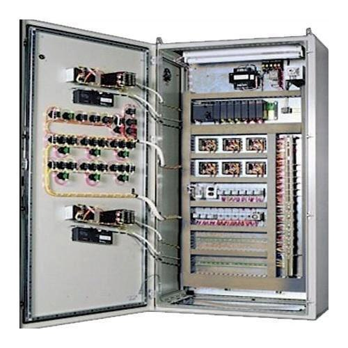
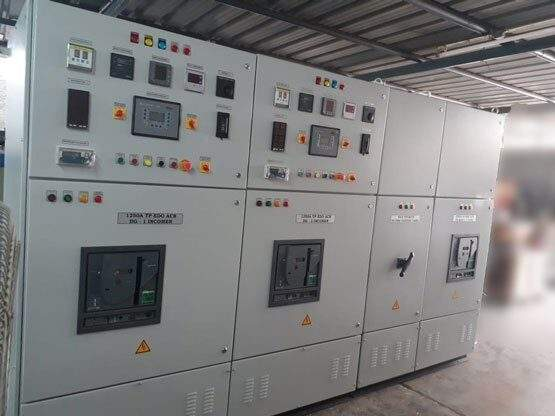
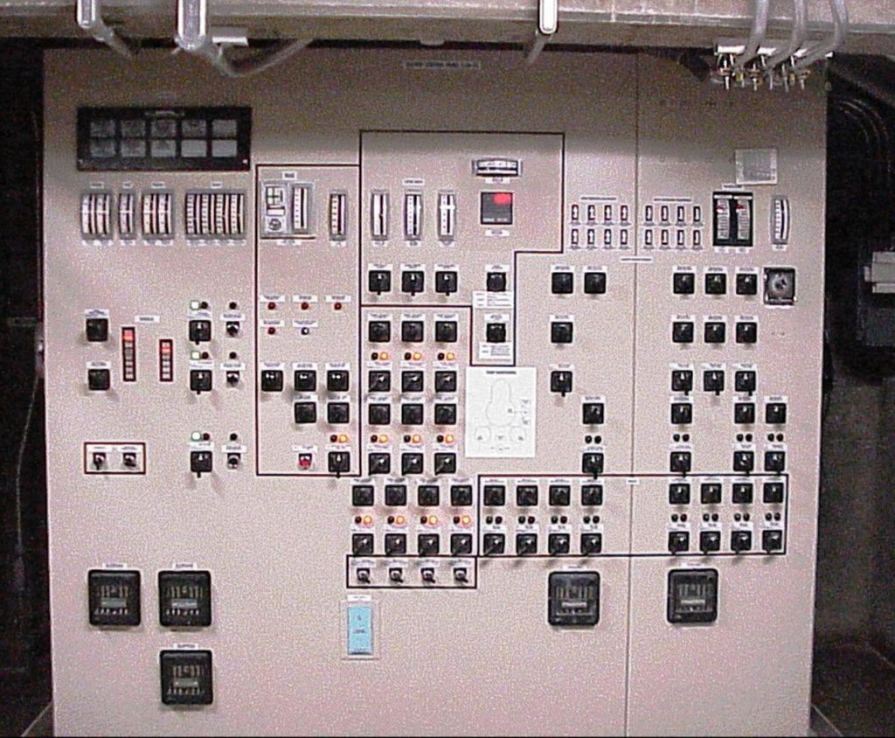
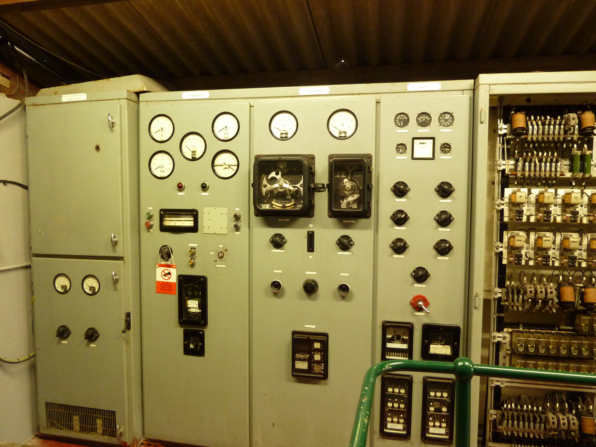
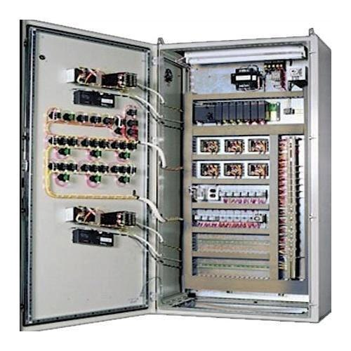
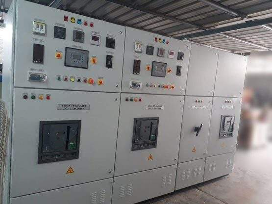
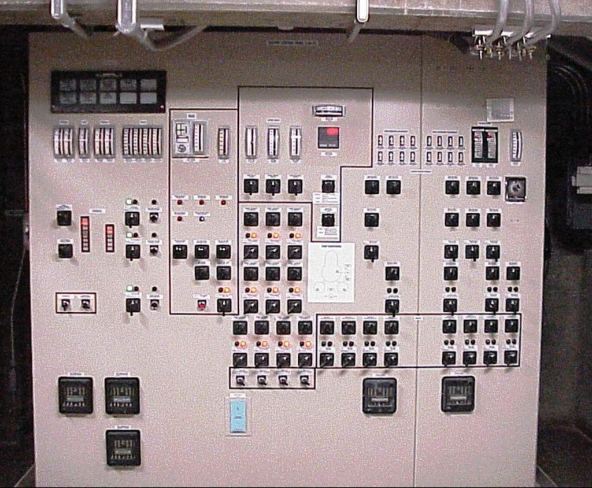
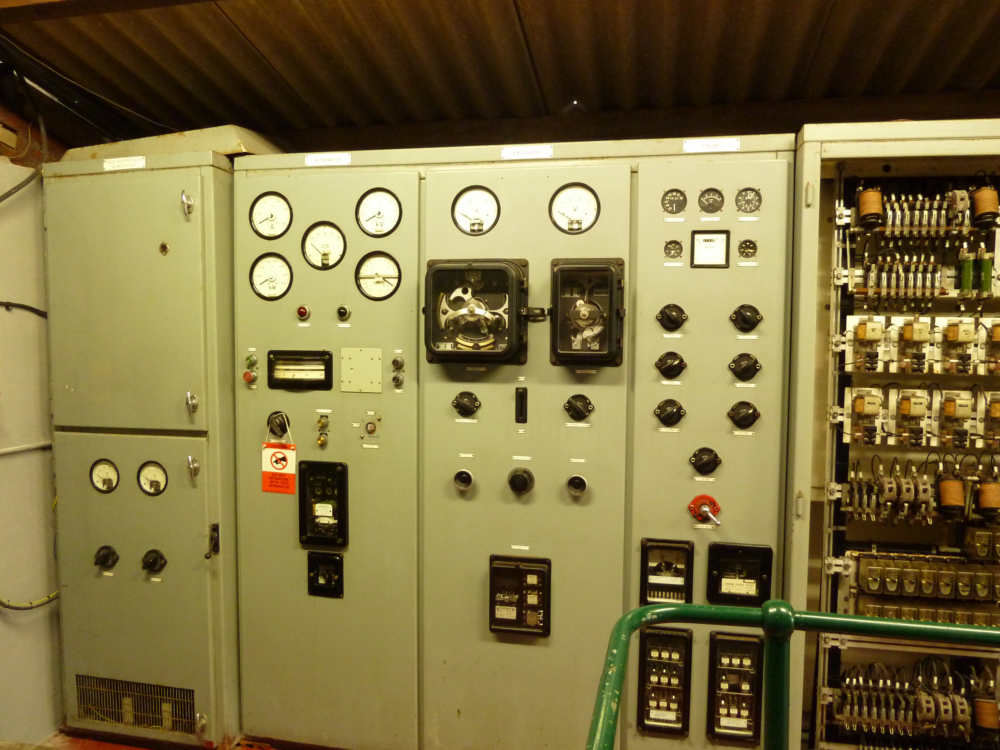

Radiation Monitoring Instruments
Radiation monitoring instruments are essential tools used to measure and track radiation levels in various environments. They play a crucial role in ensuring safety in settings where radiation is present, such as nuclear power plants, research laboratories, medical facilities, and even in the environment. Here’s a detailed look at these instruments, their usage, and more:
Types of Radiation Monitoring Instruments
1. Geiger-Müller Counters (Geiger Counters)
- Usage:Detects and measures radiation (alpha, beta, and gamma) by counting the number of ionizing events in a Geiger-Müller tube.
- Features:Portable, provides audible and visual signals, suitable for general radiation detection.
- Limitations:Less effective for detecting low levels of radiation and can have lower precision compared to other instruments.
2. Scintillation Counters
- Usage:Measures radiation by detecting the flashes of light (scintillations) produced when radiation interacts with a scintillating material.
- Features:Sensitive to alpha, beta, and gamma radiation; used for both portable and stationary applications.
- Limitations:Requires a power supply and can be more expensive.
3. Ionization Chambers
- Usage:Measures radiation by collecting ion pairs produced in a gas-filled chamber when exposed to radiation.
- Features:Suitable for high-dose measurements and provides accurate dosimetry data.
- Limitations:Generally less sensitive to low radiation levels compared to scintillation counters.
4. Dosimeters
- Usage:Measures and records an individual’s exposure to radiation over time. Types include:
- Film Badges:
Uses radiation-sensitive film to measure exposure.
- Thermoluminescent Dosimeters (TLDs):
Uses materials that emit light when heated, proportional to the amount of radiation exposure.
- Electronic Personal Dosimeters (EPDs):Provides real-time readings of radiation exposure and alerts the user.
5. **Alpha and Beta Particle Detectors
- Usage:Specialized detectors designed to measure alpha and beta particles specifically.
- Features:Often used in environments where these specific types of radiation are of concern.
- Limitations:May not detect gamma radiation effectively.
6. Spectrometers
- Usage:Analyzes the energy spectrum of radiation to identify and quantify different radioactive isotopes.
- Features:Provides detailed information about the type of radiation and its source.
- Limitations:Generally more complex and costly, requiring specialized training.
Usage
Monitoring Environments:
- Nuclear Power Plants:Ensure radiation levels are within safe limits around reactors and spent fuel pools.
- Medical Facilities:Monitor radiation exposure from medical imaging equipment and radiotherapy.
- Research Labs:Track radiation from experiments and sources.
- Environmental Monitoring:Check radiation levels in the environment to assess contamination or natural background radiation.
Personal Safety: - Worker Protection:Dosimeters worn by workers to track exposure and ensure it remains within safe limits.
- Emergency Response:Instruments used to assess radiation levels during incidents or accidents.
Regulatory Compliance: - Safety Standards:Ensures facilities comply with health and safety regulations regarding radiation exposure.
- Documentation:Records are maintained for regulatory audits and safety assessments.
More Details
Calibration and Maintenance:
- Regular Calibration:Ensures accuracy and reliability of measurements. Calibration is typically performed by specialized facilities.
- Maintenance:Routine checks and maintenance are necessary to ensure instruments are functioning properly and accurately.
Training: - Operational Training:Personnel must be trained in the correct use of radiation monitoring instruments and understanding the readings.
- Safety Protocols:Training includes emergency procedures and response actions based on instrument readings.
Integration: - Safety Systems:Often integrated with alarm systems and data management systems for comprehensive radiation safety management.
Importance
Radiation monitoring instruments are vital for protecting human health and safety in environments where radiation is present. They help detect potential hazards, ensure compliance with safety standards, and provide data for effective emergency response and research.